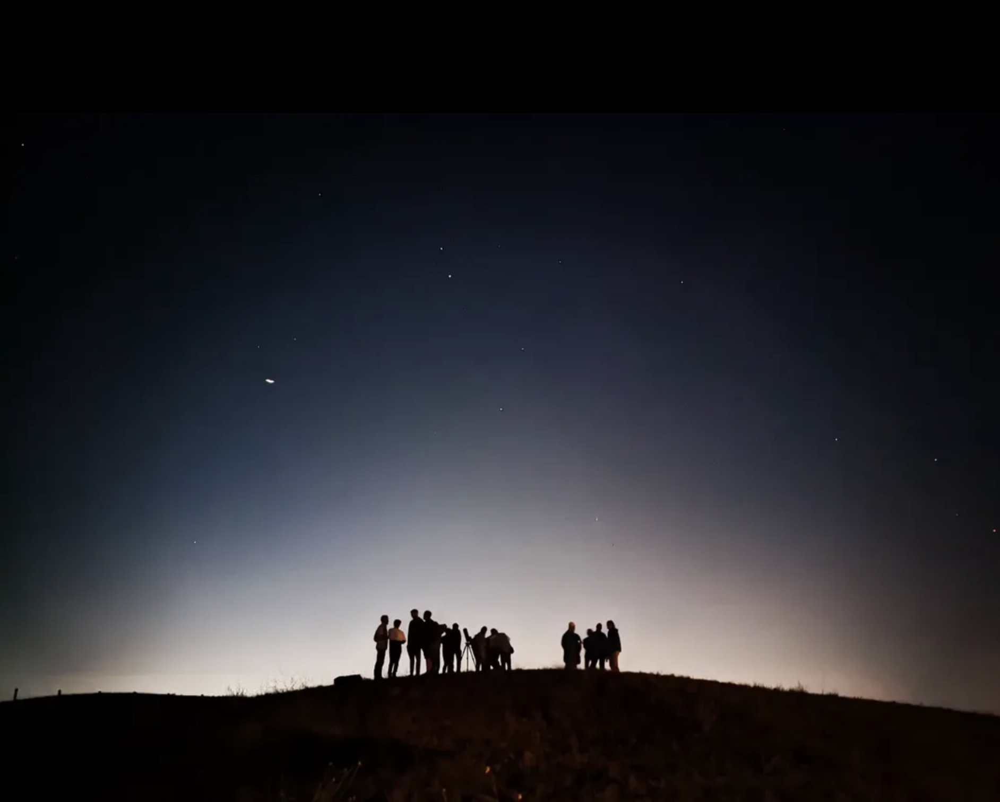

Supervision of Interns
Legend: L3: 3rd-year Licence • M1: 1st-year Master • M2: 2nd-year Master

Suhani Sondhi
M1
Scheduled
09/2026 – 12/2026
Continuation of the exploration of the atmospheric properties of the SPHEREx BDs library, work started by Sacha Petit-Jean-Dyck.
Pablo Requeijo
M2
Scheduled
09/2026 – 12/2026
Inclusion of a transmission spectral modeling option in Optex to model the warm Neptune HIP 67522b in collaboration with the PhD student E. Chabron.
Ricardo Garin
M2
Scheduled
09/2026 – 11/2026
Exploration of reflected light spectral features in preparation for ELT/PCS in collaboration with the PhD student A. Radcliffe.
Sacha Petit-Jean-Dyck
L3
05/2026 – 07/2026
Atmospheric forward modeling with ForMoSA of the SPHEREx known brown dwarfs dataset from Gagné et al. (2026).
Pablo Requeijo
M1
04/2026 – 07/2026
Exploration of the performance of ELT/MICADO/LSS for atmospheric analysis. Adaptation of ForMoSA code with co-authorship in arXiv:2607.26243, and results will be in Palma-Bifani, Requeijo et al. in prep (MICADO LSS paper).
Idriss Abdoulwahab
M1
06/2024 – 08/2024
Development of exoSpin for the obliquity computation of AB Pic b. Results in Gandhi et al. (2025).
Damien Borja
M1
06/2023 – 07/2023
Atmospheric characterization of AF Lep b. Results in Palma-Bifani et al. (2024).